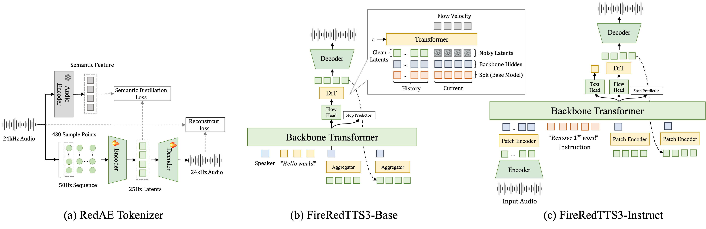

FireRed Team
Abstract: Recent continuous autoregressive TTS models operate directly on continuous speech representations, preserving rich acoustic details while leveraging the instruction-following capabilities of text LLMs. This paradigm opens new possibilities for voice cloning, instruction-controlled voice design, and speech editing, but remains susceptible to error accumulation during autoregressive generation. Existing solutions often require additional semantic modules, multi-stage tokenizer training pipelines, or complex autoregressive architectures. In this work, we propose FireRedTTS3, a simple yet effective speech generation and editing framework that mitigates error accumulation at the representation level. Specifically, we leverage a frozen Audio Encoder trained on diverse speech understanding tasks as a semantic teacher to regularize the audio feature space. This improves text-speech alignment and stabilizes autoregressive generation while keeping the overall system simple. FireRedTTS3 provides two variants: FireRedTTS3-Base for multilingual and multi-dialect zero-shot voice cloning, and FireRedTTS3-Instruct for unified voice cloning, instruction-controlled voice design, and speech editing. Experiments show that FireRedTTS3-Base achieves the best average speech intelligibility and speaker similarity among compared systems on Seed-TTS-Eval and MiniMax-MLS-Test, while FireRedTTS3-Instruct outperforms competing systems on InstructTTSEval and Ming-Freeform-Audio-Edit. These results demonstrate that semantically enriched continuous speech representations, combined with a simple architecture, enable stable, controllable, and high-fidelity speech generation and editing.

Main contributions:
Contents
| Language | Prompt Speech | Prompt Text | Target Text | Generated |
|---|---|---|---|---|
| Chinese | 自动驾驶将大幅提升出行安全，效率。 | 全球每年有超过一百三十五万人，因交通事故而死亡。 | ||
| 告诉我们给开发商下了一个强拆通知书。 | 对话从差点要阵亡的笨鹅，和不行的笨咪开始。 | |||
| 你喜欢爬山的话，可以去崂山，风景超赞。 | 不管北京的房价一天，涨多少或者是跌多少。 | |||
| English | The resulting wave interference pattern is the basis of diffraction analysis. | More visible enforcement of traffic regulations on motorists, bicyclists, and pedestrians has commenced. | ||
| The body "pushes" the air down, and the air pushes the body upward. | Winter afternoons are cool and frequently sunny, but mornings are freezing to frigid. | |||
| Payment was deposited into a standard farebox on board the bus. | With the movie unfinished, the album was instead promoted in conjunction with the tour. |
| Language | Prompt Speech | Prompt Text | Target Text | Generated |
|---|---|---|---|---|
| Arabic | تخلصتان من جثة ليلة دامية برميها في الغابة | الحصول على فرصة لإجراء مقابلة مع شخص مميز هو أمر مفرح. | ||
| Cantonese | 這些人根本不會想到生活人、乃至四一人對自己本地文化的認同,是足以對抗一切行政命令 | 最近嘅研究顯示，喺大腦發展嘅關鍵期，適當嘅音樂教育可以顯著提升兒童嘅語言能力同埋空間推理能力。 | ||
| Chinese | 语音识别是实现人机交互的一种重要途径是自然语言处理的技术环节随着人工智能技术的发展人机交互等大量应用场景存在着流式语音识别的需求 | 本周末将有一场大型文化艺术节在市中心举行，活动包括传统音乐表演、手工艺展示和美食品尝。 | ||
| Czech | Více než polovinu světové oficiální rozvojové pomoci poskytuje Evropská unie. | Pro vrácení produktu jej prosím zabalte do původního obalu spolu s účtenkou a odešlete na adresu uvedenou na našich webových stránkách. | ||
| Dutch | Mensen mogen niet van het internet afgesloten worden zonder gerechtelijke tussenkomst. | De langste brug van de regio werd gisteren geopend, die twee belangrijke economische gebieden verbindt en de reistijd met maximaal twee uur verkort. | ||
| English | ecclesiastical heraldry of the catholic church appeared first in seals nearly all vesica shaped | Time seemed to slow down as he fell from the bridge, his entire life flashing before his eyes in those few seconds before hitting the water below. | ||
| Finnish | Tänään olimme onnistuneet pelastamaan Uffen Hydruksen kielistä sekä muuttamaan kaiken näkymättömän planeetalan näkyväksi. | Tiedemies omisti elämänsä aikakoneelle, ja satavuotissyntymäpäivänään hän vihdoin onnistui matkustamaan menneisyyteen korjatakseen elämänsä suurimman virheen. | ||
| French | L'analyse intéresse l'enseignement technique, l'amélioration de la productivité et la médecine du travail. | L'université de la Sorbonne a signé un accord de coopération avec des institutions américaines pour l'échange d'étudiants et de chercheurs dans les domaines des sciences et de la technologie. | ||
| German | Der durch Wasser, Kohlensäure und Huminsäuren gelöste Kalk wird wieder in der Höhle abgelagert. | Der hundertjährige Baum in der Mitte des Platzes erfüllt laut lokaler Legende die Wünsche derjenigen, die bei Vollmond eine Münze zwischen seine Wurzeln legen. | ||
| Greek | Κοίταξε το αδιανό κρεμαστάρι πάνω από τη χρυσή κονσόλα και έβγαλε ένα βαθύ αναστεναχμό. | Για να επιστρέψετε το προϊόν, παρακαλούμε συσκευάστε το στην αρχική του συσκευασία μαζί με την απόδειξη και στείλτε το στη διεύθυνση που αναφέρεται στον ιστότοπό μας. | ||
| Hindi | चमू में कश्मीरी पंडितों का प्रदर्शन विस्थापितों के रजिस्ट्रेशन फिर से खोलने पर गुसा | आधुनिक टेलीमेडिसिन प्लेटफॉर्म रोगियों को घर बैठे डॉक्टरों से परामर्श करने की सुविधा प्रदान करते हैं। | ||
| Indonesian | Bunglon adalah binatang yang dapat bersalin warna sesuai dengan warna alam sekitarnya | Saat-saat yang penuh ketegangan membuat setiap bab menjadi semakin menarik. | ||
| Italian | Dalla distillazione sottovuoto si ottengono prodotti pesanti quali gasolio e olio combustibile. | La giovane pittrice aveva un dono speciale: i suoi dipinti prevedevano eventi futuri, ma nessuno le credeva finché uno dei suoi quadri mostrò la grande inondazione che devastò la città. | ||
| Japanese | 議員内閣制と大統領制の違いは、立法府と行政府の関係にある。議員内閣制では、国民から選挙で選ばれた議員が議会を構成し、議会の多数派から首相が指名され、首相が内閣を組織する。 | 植物は光合成によって二酸化炭素を吸収し、酸素を放出するため、地球上の生命にとって不可欠な存在です。 | ||
| Korean | 밖으로 나간 덕호는 이제야 큰 대문 소리를 찌뻑 내며 쿵쿵하고 중대문을 들어선다 | 이제부터 함께하는 이 소설은 "꿈의 세계로 여행하기"라는 제목입니다. | ||
| Polish | Decyduje kultura biznesu, skłonność do ryzyka oraz praktyczne związki sfery badawczo-rozwojowej z prywatną przedsiębiorczością. | Druk 4D to ewolucja druku 3D, gdzie wydrukowane obiekty mogą zmieniać kształt lub właściwości w odpowiedzi na bodźce zewnętrzne, takie jak temperatura, światło czy wilgotność. | ||
| Portuguese | Catas, poços retangulares, mineralizados, pás, picaretas, enxadeco, enxada, suruca, peneiras, catação. | Os oceanos absorvem aproximadamente 30% do dióxido de carbono liberado na atmosfera, ajudando a regular o clima global. | ||
| Romanian | Vor exista conferințe de monitorizare, raportare, etc. | În biblioteca veche se afla o carte misterioasă al cărei conținut se schimba de fiecare dată când era citită, adaptându-se la nevoile și dorințele ascunse ale fiecărui cititor. | ||
| Russian | Команды разработчиков внедряли машинное обучение для улучшения пользовательских интерфейсов. | Король переоделся крестьянином и путешествовал по королевству, чтобы понять истинные проблемы своего народа и узнать, почему они недовольны двором. | ||
| Spanish | El Instituto Acton, un Tintag libertario conservador cristiano estadounidense, lleva su nombre. | Mi ordenador está funcionando muy lento últimamente, ¿conoces a alguien que pueda arreglarlo por un precio razonable? | ||
| Thai | อันนี้ก็ความเชื่อส่วนตัวฮะ ถ้าไม่ร้านร้านผม ผมก็ไม่ว่าอะไร แยกเตาโพธยานคํา | เพื่อเปิดใช้งานคุณสมบัติความปลอดภัยเพิ่มเติมในบัญชีของคุณ โปรดยืนยันหมายเลขโทรศัพท์และอีเมลของคุณผ่านหน้าการตั้งค่า | ||
| Turkish | Ve en önemli olarak nitelendirilen açık arttırma usulü ile item satışını sağlayan market sistemi eklendi. | Meteoroloji Genel Müdürlüğü, ülkenin batı kesimlerinde etkili olacak kuvvetli yağış ve fırtına için sarı alarm verdi. | ||
| Ukrainian | Здається, що ще ніколи небо не сміялося так призно до створінь. | Космічний корабель приземлився на невідомій планеті, і астронавти були вражені, виявивши структури, які, здавалося, були побудовані розвиненою цивілізацією. | ||
| Vietnamese | Trinh có hỏi thì được biết sông Trai vẫn đang làm ở chỗ cũ. | Chính quyền thành phố đã công bố việc triển khai hệ thống giao thông công cộng mới hứa hẹn sẽ giảm thời gian chờ đợi và cải thiện chất lượng dịch vụ. |
| Dialect | Prompt Speech | Prompt Text | Target Text | Generated |
|---|---|---|---|---|
| 粤语 | 沙士嗰阵啊，因为好多人都失业啊嘟嘟嘟嘟嘟嘟嘟啊，跟住佢又冇钱买楼又跳楼嗰啲啊。 | 今晚落咗成日雨，出面好凍，你出门记得带返把遮啊。 | ||
| 安徽话 | 于吉不行张角一个半调子道士也不行 | 今天天气挺好的，吃完饭咱们出去走走，顺便到菜市场买点新鲜菜。 | ||
| 福建话 | 关于泉州过二月二的习俗那边们还知道那些吗 | 今天天气挺好的，吃完饭咱们出去走走，顺便到菜市场买点新鲜菜。 | ||
| 甘肃话 | 现在就是这样的恶性循环 | 今天天气挺好的，吃完饭咱们出去走走，顺便到菜市场买点新鲜菜。 | ||
| 贵州话 | 他们就是把饭费 | 今天天气挺好的，吃完饭咱们出去走走，顺便到菜市场买点新鲜菜。 | ||
| 河北话 | 有幸参与第六次铁路大提速，京沪夕发朝至。 | 今天天气挺好的，吃完饭咱们出去走走，顺便到菜市场买点新鲜菜。 | ||
| 河南话 | 动一下就流水汗水直流真让我纠结呀 | 今天天气挺好的，吃完饭咱们出去走走，顺便到菜市场买点新鲜菜。 | ||
| 湖北话 | 要说土地开发上海那才叫把土地都开发光了 | 今天天气挺好的，吃完饭咱们出去走走，顺便到菜市场买点新鲜菜。 | ||
| 湖南话 | 就就去那下巷子里寻咯但是最推荐的嘞还是福记炸炸炸 | 今天天气挺好的，吃完饭咱们出去走走，顺便到菜市场买点新鲜菜。 | ||
| 江西话 | 不是牛逼，纯粹装逼 | 今天天气挺好的，吃完饭咱们出去走走，顺便到菜市场买点新鲜菜。 | ||
| 辽宁话 | 女孩儿只有陪他走过女孩儿将永远幸福下去 | 今天天气挺好的，吃完饭咱们出去走走，顺便到菜市场买点新鲜菜。 | ||
| 闽南语 | 我看迄我较爱看诶电影基本上计是迄种，呃破案啊是迄种 | 今天天气挺好的，吃完饭咱们出去走走，顺便到菜市场买点新鲜菜。 | ||
| 宁夏话 | 可是和活佛说了见死不救罪大孽重 | 今天天气挺好的，吃完饭咱们出去走走，顺便到菜市场买点新鲜菜。 | ||
| 陕西话 | 像央视今像央视大楼那样的也叫特色 | 今天天气挺好的，吃完饭咱们出去走走，顺便到菜市场买点新鲜菜。 | ||
| 山东话 | 在大挂车头左后轮下电动车被压扁 | 今天天气挺好的，吃完饭咱们出去走走，顺便到菜市场买点新鲜菜。 | ||
| 上海话 | 呃超负荷搿种运动白天看电脑然后夜到头看手机但是侬讲勿看也勿现实，所以搿也是啧一桩一桩蛮蛮蛮麻烦个事体要 | 今朝天气蛮好格，阿拉切好饭一道出去兜兜，顺便买眼小菜。 | ||
| 山西话 | 锅盖掀开是一盆汤 | 今天天气挺好的，吃完饭咱们出去走走，顺便到菜市场买点新鲜菜。 | ||
| 四川话 | 接下来的夏季成都还会不会再出现如此强降雨 | 今天天气挺好的，吃完饭咱们出去走走，顺便到菜市场买点新鲜菜。 | ||
| 天津话 | 安全行驶一定要牢记，疏忽大意肯定出事故 | 今天天气挺好的，吃完饭咱们出去走走，顺便到菜市场买点新鲜菜。 | ||
| 温州话 | 觉得这不仅仅是一首歌 | 今天天气挺好的，吃完饭咱们出去走走，顺便到菜市场买点新鲜菜。 | ||
| 吴语 | 崔真实生前否认这一传信要求警方进行调查调 查 | 今天天气挺好的，吃完饭咱们出去走走，顺便到菜市场买点新鲜菜。 | ||
| 云南话 | 二是提高基层党组织从严治党依规治党的水平 | 今天天气挺好的，吃完饭咱们出去走走，顺便到菜市场买点新鲜菜。 |
| Instruction | CoT | Text | Generated |
|---|---|---|---|
| 性别: 女性童声. 音高: 典型女童高音. 语速: 语速舒缓平稳. 音量: 音量初始轻柔，后趋响亮清晰. 年龄: 幼年儿童. 清晰度: 吐字清晰圆润. 流畅度: 言语流畅自然. 口音: 标准普通话. 音色质感: 音色清脆甜美，略带稚气. 情绪: 由初始沉吟转为坚定自信与向往. 语调: 起始平缓，后半句语调上扬，强调肯定. 性格: 天真乐观，富有梦想. | [性别] 女 [年龄] 儿童 [音高] 中高 [音色质感] 清脆甜美 [音量] 轻 到 响 [口音] 普通话 [情绪] 沉吟 到 坚定自信 [流畅度] 流畅 [语速] 平稳 [清晰度] 清晰 [语调] 陈述 到 抑扬顿挫 [性格] 天真无邪 | 刚刚长大了，一定会开飞船的。 | |
| gender: Female. pitch: Very high child-like pitch. speed: Rapid and energetic pace throughout. volume: Loud and assertive, bordering on shouting. age: Young child. clarity: Clear and distinct articulation despite the excitement. fluency: Fluent with no noticeable hesitations. accent: American English. texture: Bright and somewhat shrill. emotion: Excited, defiant, and assertive. tone: Declarative and confrontational. personality: Energetic, assertive, and determined. | [gender] female [age] child [pitch] high [texture] bright [volume] loud [accent] american [emotion] excited [fluency] fluent [speed] fast [clarity] clear [tone] confrontational [personality] assertive | Over my dead body, this is going to be my breath. And there's nothing you can do about it. | |
| 体现标准普通话的发音,带有戏剧化的哭腔,声音略显沙哑且紧张,语调表现出哀伤又充满绝望的恳求感,流露出依赖性强、遇事易慌乱的情感特征。 | [性别] 男 [年龄] 中年 [音高] 中高 [音色质感] 沙哑 [音量] 正常 [口音] 普通话 [情绪] 悲伤 到 绝望 [流畅度] 有停顿 [语速] 慢 [清晰度] 含糊 [语调] 哀怨 [性格] 敏感多疑 | 他不行了,都怪我害了他,他就相信您叶老师,您救救他吧。 | |
| As if on stage, the animated young adult questions the group's unexpected good fortune. | [gender] female [age] young_adult [pitch] high [texture] bright [volume] normal [accent] american [emotion] surprised [fluency] fluent [speed] fast [clarity] clear [tone] informal [personality] outgoing | She acted like she was going to wipe down the furniture the minute we left. and she said that my mom won the lottery. Can you believe it is? | |
| 展示出一位愤怒且急躁的青年女性形象,声音明亮清晰,语速较快,高音区显著提高,言辞直接,充满不耐烦的质问与斥责情绪。 | [性别] 女 [年龄] 青年 [音高] 中高 到 高 [音色质感] 清亮 [音量] 较响 [口音] 普通话 [情绪] 愤怒 [流畅度] 流畅 [语速] 快 [清晰度] 清晰 [语调] 质问 [性格] 强势权威 | 你神经病是不是？你闲着没事做全忘脚啊，几百只鸡叫素儿，你家走吧。 | |
| Channel the spirit of a lively ringmaster at a circus, combining booming enthusiasm with moments of charming persuasion. | [gender] male [age] middle_age [pitch] high [texture] bright [volume] loud [accent] american [emotion] enthusiastic [fluency] fluent [speed] fast [clarity] clear [tone] persuasive [personality] outgoing | You're terrific. Oh, you're colossal stupendous. Come on, alley-oop. I gotta wash behind your ears. You ought to be proud. You're a success. Look, a peanut. Come on, eat it. Got lots of vitamins. | |
| 像是一位老朋友给你讲一个充满玄机故事的口吻,嗓音浑厚沙哑,有种沉稳自信又略带得意的感觉。 | [性别] 男 [年龄] 中年 [音高] 中低 [音色质感] 浑厚 [音量] 正常 [口音] 普通话, 说书人风格 [情绪] 自信 [流畅度] 流畅 [语速] 平稳 [清晰度] 清晰 [语调] 抑扬顿挫 [性格] 沉稳自信 | 这招叫做醉翁提笔, 一真一假 | |
| Convey the reflective tone of a historian recounting a sacred tale, letting the deep gravelly voice unfold like ancient echoes. | [gender] male [age] middle_age [pitch] low [texture] resonant [volume] quiet [accent] american [emotion] contemplative [fluency] fluent [speed] slow [clarity] clear [tone] narrative [personality] thoughtful | Creek, uh, i come many moons over great mountains through deep rivers to see white clouds. |
| Instruction | Original Text | Target Text | Original Audio | Edited Audio |
|---|---|---|---|---|
| insert '简直' after the character or word at index 8. | 真是个浪漫的邂逅可以说是英雄救美了 | 真是个浪漫的邂逅简直可以说是英雄救美了 | ||
| insert '真正' before the character or word '好'. | 就有道而正焉可谓好学也已 | 就有道而正焉可谓真正好学也已 | ||
| insert 'clearly' before the character or word at index 8. | Its legal status in Trinidad was insufficient to preserve its ecological status. | Its legal status in Trinidad was insufficient clearly to preserve its ecological status. | ||
| insert 'successfully' after the character or word 'profession'. | Previously an attorney Korona left the profession to pursue a career in music. | Previously an attorney Korona left the profession successfully to pursue a career in music. |
| Instruction | Original Text | Target Text | Original Audio | Edited Audio |
|---|---|---|---|---|
| substitute '妈妈' with '爸爸'. | 我想对于妈妈来说会比任何礼物都要温暖 | 我想对于爸爸来说会比任何礼物都要温暖 | ||
| substitute the characters or words from index 8 to index 10 with '五万元'. | 当时我想等筹齐两万元聘礼就送她妈回家 | 当时我想等筹齐五万元聘礼就送她妈回家 | ||
| substitute 'get pictures off' with 'transfer photos from'. | I'm trying to explain to my mother how to get pictures off her phone. | I'm trying to explain to my mother how to transfer photos from her phone. | ||
| substitute the words from index 8 to index 9 with 'could become'. | Considering the growth of human population insects might be the food of the future. | Considering the growth of human population insects could become the food of the future. |
| Instruction | Original Text | Target Text | Original Audio | Edited Audio |
|---|---|---|---|---|
| delete '比普通的茶叶要'. | 花草茶的口味一般比普通的茶叶要苦一些 | 花草茶的口味一般苦一些 | ||
| delete the characters or words from index 11 to index 15. | 我吃了点燕麦片煎鸡蛋还喝了点橙汁 | 我吃了点燕麦片煎鸡蛋汁 | ||
| delete 'times'. | The classification of this gibbon has changed several times in the past few years. | The classification of this gibbon has changed several in the past few years. | ||
| delete the characters or words from index 2 to index 6. | On the second day the boy climbed to the top of a cliff near the camp | On climbed to the top of a cliff near the camp |
| Instruction | Original Text | Original Audio | Edited Audio |
|---|---|---|---|
| adjusts the speed to 0.5. | 我用胸抵住车把，掌握方向，速度一点也不比别人慢。 | ||
| adjusts the speed to 0.7. | There is a growing body of case law on Bayh-Dole. | ||
| adjusts the speed to 1.3. | Cribb was born near Bristol but moved to London before starting professional fighting. | ||
| adjusts the speed to 2. | 切实帮助困难群众解决生产生活中，遇到的困难和问题。 |
| Instruction | Original Text | Original Audio | Edited Audio |
|---|---|---|---|
| shifts the pitch by 3 steps. | 因为外面有战争，家里又有战争带来的悲伤和匮乏。 | ||
| shifts the pitch by 5 steps. | 自动驾驶将大幅提升出行安全，效率。 | ||
| shifts the pitch by -1 steps. | The heart of the campus has a number of historic buildings. | ||
| shifts the pitch by -1 steps. | Stevenson is also the director of music ministries at Angeles Mesa Presbyterian Church. |
| Instruction | Original Text | Original Audio | Edited Audio |
|---|---|---|---|
| adjusts the volume to 1.4. | A woman sits as she shows the designs she has made in the floor. | ||
| adjusts the volume to 1.6. | For example, they both consist of predominately older, hence redder, stars. | ||
| adjusts the volume to 0.9. | 伏羲的儿孙们看见伏羲捉来了鱼，也都欢欢喜喜跑来问长问短。 | ||
| adjusts the volume to 0.3. | 他们还告诉巨人，那座城市里群英荟萃。 |
The content provided above is for academic purposes only and is intended to demonstrate technical capabilities. Some examples are sourced from the internet. If any content infringes on your rights, please contact us to request its removal.